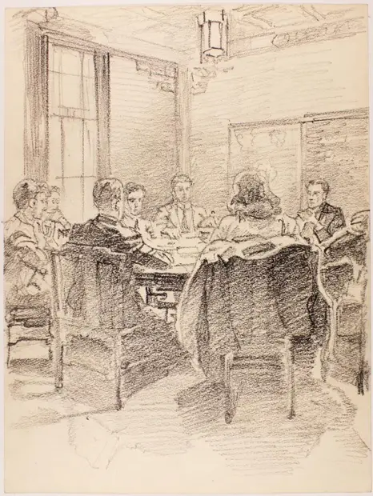

Students in the Chinese Room
访问原网页 ↗Visit original website ↗

S223 · Andrey Avinoff (1884–1949)／University of Pittsburgh Art Gallery · 1939–1949
阿维诺夫的铅笔素描记录了学生围坐在匹兹堡大学中国教室内的场景。与馆藏水彩《The Chinese Room》（72.1.250.50）为两件独立作品。这幅画是滕白也曾参与设计的空间投入使用后的图像史料，画家为阿维诺夫。Avinoff’s graphite sketch shows students gathered around a table in the Chinese Nationality Room. Distinct from his watercolor of the interior (72.1.250.50), it documents the room in use. Avinoff drew the image; Teng helped design the room.
馆藏图像与原文Archived images and documents

原始网址Original URL
https://collections.uag.pitt.edu/Detail/objects/7584